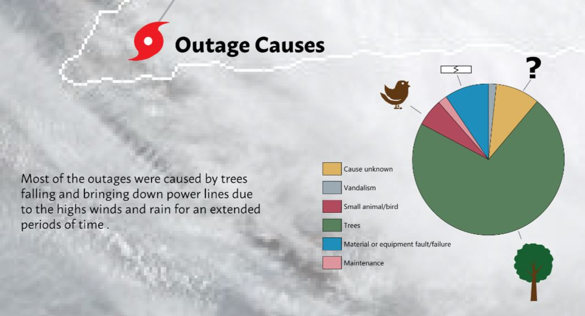
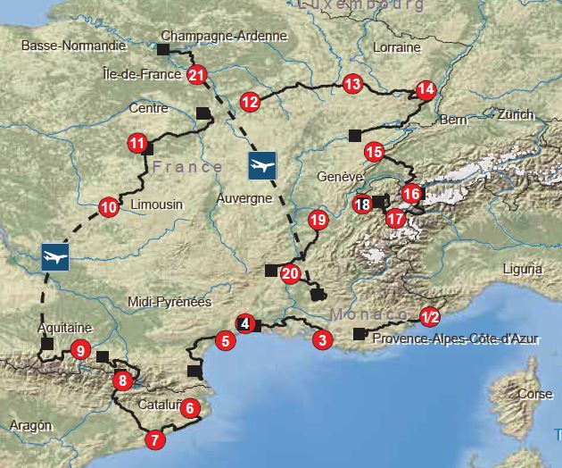

Projects
Visual Story Challenge
Goal of this project was to produce a longform in Adobe Illustrator that would tell a story about a topic of choice. The longfrom had to include the following:
- One bivariate map
- One supporting histogram, scatterplot or other statistical graphic
- Construct a visual story as a single longform image file in a .png format.

Download the Longform
Terrain Representation Challenge
Goal of this project was to produce a detailed basemap for a road cycling tour. The basemap had to include the following:
- The temporal sequence of the stage segments must be clearly labeled
- A detailed basemap that includes terrain, land cover, and place name labels
- Construct a visual story as a single longform image file in a .png format.
- Use Adobe Photoshop to produce final raster layer by combining landcover and hillshades
- Use Adobe Illustrator to combine hillshade and vector layers to produce final product

Download the Terrain Map
Mapbox Studio Styled Vector Tileset
Goal of this project was to produce a Map Tile Set that should fit the movie type (Star Trek) description well and use unique features to help the movie stand apart from other movies of a similar genre:
{kind=link}